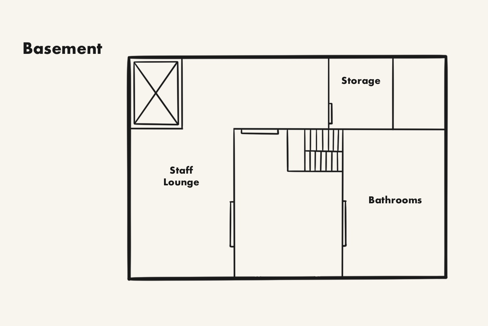

LIBRARY MAP

FIRST FLOOR
North Room
- Young Adult/Adult- Fiction Sections
East Room
- Children's Reading Room- Children's Computer Activity Area
- Children's Books
West Room
- Non-fiction Sections- Book/Video Drop-Off
- Book/Material Checkout
SECOND FLOOR

- Computer/Research Area
- Beanbag Reading Area
BASEMENT
- Bathrooms (Gender-neutral)
- Staff Lounge
- Storage Room
Key
- Bathroom- Stairs
- Elevator
- Emergency Exit
GENERAL INFORMATION
ADDRESS
Nelson Park Branch Library
34 Hansen Avenue
Declan County, New York 00405
Phone: 456-123-897
HOURS
Sunday ClosedMonday 9 AM - 5:30 PM
Tuesday 9 AM - 5:30 PM
Wednesday 9 AM - 5:30 PM
Thursday 9 AM - 5:30 PM
Friday 8 AM - 4:30 PM
Saturday 11 AM - 4:30 PM
*Hours are subject to change during holidays and religious observations.
NEIGHBORING BRANCHES
Birchwood Branch Library45 Ninth Street
Lestington, New York 00405
Holland Drive Branch Library
31 Teller Street
Declan County, New York 00412
Linton Branch Library
60 Cloud Ave
Lestington, New York 00436
South Midland Branch Library
7 Periwinkle Lane
Midland, New York 00422
Hedgehog Road Branch Library
46 Berry Street
Declan County, New York 00405